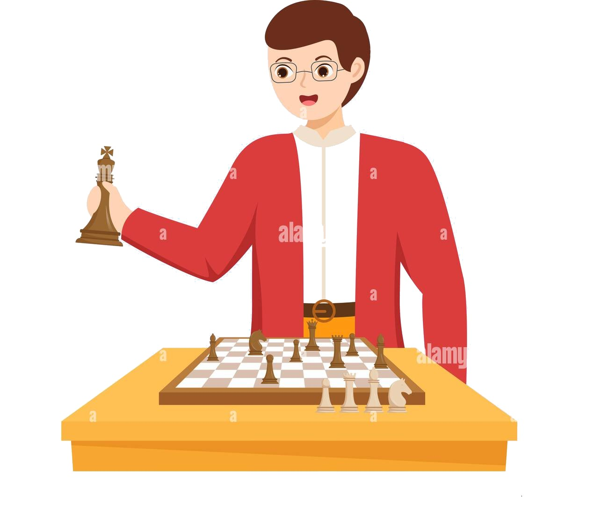

En el Club de Ajedrez Iquique, nos dedicamos a cultivar una pasión duradera por el ajedrez en personas de todas las edades. A través de clases magistrales, entrenamientos especializados y la organización de torneos desafiantes en nuestra comunidad, nos esforzamos por fomentar no solo la excelencia en el juego, sino también habilidades esenciales para la vida como la toma de decisiones informadas, la paciencia y la resiliencia. Nuestra misión es crear un ambiente acogedor y estimulante donde cada individuo, desde niños hasta adultos, pueda descubrir y aprovechar los innumerables beneficios que el ajedrez ofrece.
